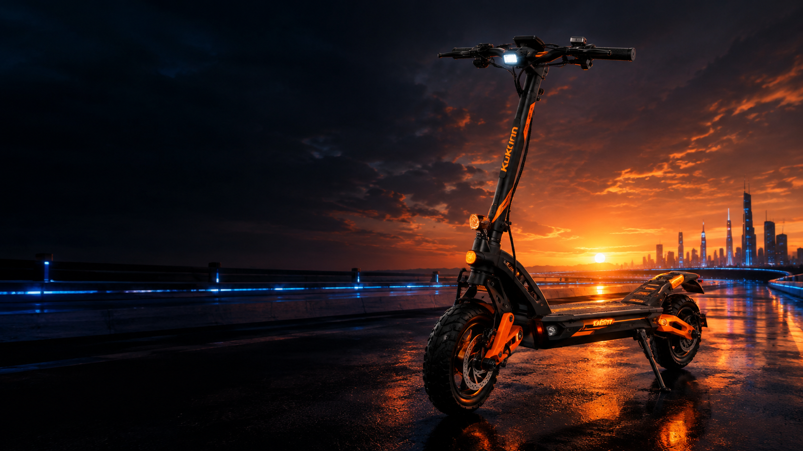

🛴
Ride & explore
An electric-scooter-inspired experience is at the heart of the project. More details will be shared as features develop.
Welcome to Kukirin Universe — an upcoming Roblox experience inspired by electric scooters, exploration, and the freedom to ride. We're building the universe one step at a time.

Kukirin Universe is an independent Roblox game project. We're working on the experience and growing the community before everything is ready. Stay tuned as the project takes shape.
An electric-scooter-inspired experience is at the heart of the project. More details will be shared as features develop.
We're working toward a world that players can explore and enjoy. The final design may evolve during development.
New ideas, improvements, and previews will be shared when they're ready. This is only the beginning.
We're still working on Kukirin Universe and the project website. Thanks for your patience while we build and improve things.
The game is not finished yet. Features, visuals, and release timing may change. We'll share confirmed news and sneak peeks as development progresses.
We're excited to bring Kukirin Universe to life, and we'd be very happy to have your support! Check out the Roblox experience, join our Discord community, share the project with friends, and keep an eye out for future updates. Thanks for being here from the beginning. 💛